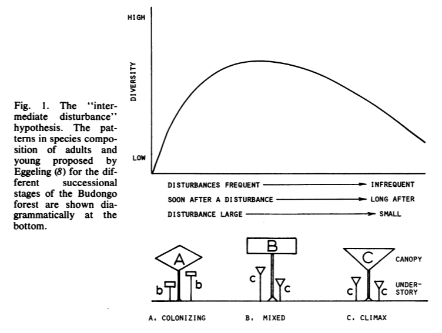

Forest Biodiversity
Download the project plan here
Download the worksheet here
Lab Context
For this lab, we will be evaluating how biodiversity varies based on different disturbance regimes. A classic concept in ecology is the intermediate disturbance hypothesis. This concept was formulated by Connell in 1978. The hypothesis is an extension of the concept of ecological succession. Succession theory suggests that communities, in a new environment, will develop following a predictable pattern in which the first organisms are colonizing ones (fast-life histories, r-selected individuals). These taxa are quick to reproduce and establish a population. Then, as resources develop in the environment, longer living yet better competing individuals will move into the area. Thus the community will slowly become dominated by organisms which have slow-life history strategies (K-selected). This concept is a persistent idea in ecology and was developed in coastal dunes [1], freshwater streams [2], and carrion studies [3]. Yet is has been extended into many other areas of ecology, including plankton (see Margalef’s Mandala).
So, how does this lead to the intermediate disturbance hypothesis? Well, what “resets” an environment is disturbances (wildfires, storms, waves, etc.). So the intermediate disturbance hypothesis posits that if disturbances are too frequent, then only early successional species will be present. However, if undisturbed, the community will move towards a late-stage successional community equilibrium. If there are “intermediate” levels of disturbance. Then we might expect higher levels of biodiversity as it sustains a mixture of community types.

In this lab we will test the intermediate disturbance hypothesis by sampling thre regions in Harbison forest which correspond to different levels of disturbance. We’ll have a low-disturbance area which has been essentially undisturbed. Then we’ll have a high disturbance region which is consistently mowed. Finally, we’ll have a mid-disturbance area which was subjected to a burn 1 year ago.
Measuring biodiversity
There are several metrics to evaluate biodiversity. In this lab we will calculate a few of the most common ones. For your worksheets you will only be required to select one of them.
A straightforward metric is Species Richness (\(R\)). This is the number of unique species in a region. \[ R = \# of\_unique\_taxa \] However, this is not the most informative metric as it does not account for the number of taxa there are of each species. For example, if there are 100 different species, yet 99% of them were one type, the area wouldn’t be very biodiverse. Species richness alone is not very informative in such cases.
Alternatively species diversity can be measured through a variety of indices. Arguable the most common is the Shannon-Wiener Index (\(H\)). This ranges from 0 (a low diversity) to larger numbers. The larger the \(H\), the more diverse the community is.
\[ H = -\sum_{i = 1}^{R}{p_i lnp_i} \] Here, for each unique taxa, we add up the proportion (\(p\)) of each (\(i^{th}\)) taxa, multiplied by the natural log of that taxa. We do that for all unique taxa (\(R\)) For count data, we can extend the formula:
\[ H = -\sum_{i = 1}^{R}{\frac{n_i}{N}ln\frac{n_i}{N}} \]
Here, \(n_i\) is the count of the specific taxa while \(N\) is the total count of taxa.
While \(H\) provides a nice measure of biodiversiy, it is still related to the overall richness. An alternative metric is to measure evenness. This will report the how spread across the different taxa the relative abundace is. For example, if we had 5 individuals each of two taxa, it would be more “even” than 1 of taxa A and 9 of taxa B. This metric is independent of the overall richness and give a perspective to the relative success of the taxa which are present. The more common metric for evenness is Pileou’s (\(D\)):
\[ D = 1 - \sum_{i=1}^{R}{\frac{n_i(n_i-1)}{N(N - 1)}} \]
Quantitative Sampling
A large challenge for ecologists who conduct field studies is how to collect quantitative, unbiased estimates of population abundance, community structure, or other ecologically relevant metrics. Here we want to collect biodiversity metrics in four forest regions.
There are several common field sampling techniques:
Some basic tools:
Quadrat (basically a square, typically of PVC)
- These are useful for defining a set sampling area. They give us the ability to quantify density (count per area) which then standardizes our metrics across regions
Transect
- A fixed line which we go and sample along. Sampling along a transect can be done with point counts (whatever is touching the transect), line-quadrat methods (placing quadrats systematically or randomly along the transect), or band-transect methods (counting everything within a fixed width of the transect).
When deploying these tools, there are several ways we can try to reduce bias. We want to have a fixed way to sample. Some common methods are:
Haphazard sampling
- This is just sampling when we encounter our study target. This is inherently biased although it is sometimes necessary when we are interested in highly mobile or elusive organisms. It also could be that we are interested in particular taxa so we just observe those. This is what we did for our Behavioral Ecology Lab last week
Systematic Sampling
- Here, samples are collected at a fixed interval (say every 2m along a transect or in set regions of a grid). This allows us to sub-sample a region. This can be particularly useful for measuring change along a gradient.
Random Sampling
- Here, random coordinates are selected in a study area (grid or transect). This ensures a non-bias sample of our study region. However, we should be cautious if there is confounding variables in the area. This is what we will do this week for the intermediate disturbance hypothesis lab.
Stratified-Random Sampling
- If we are sampling an area with known variation (differences in moisture, elevation, etc), we can create strata. These are set sub-regions to sample. Here we can then generate random coordinates within each strata for a stratified, but still random approach.
When we construct our sampling design some key considerations are: How can we be unbias our samples? What are we measuring? If it is just the overall area, random sampling may be sufficient. However if we believe there is variation within our study area we might want to use a transect with systematic sampling, or a stratified random design. These are all things you’ll want to consider when designing your sampling schemes.
Harbison Forest Directions
Go to the main entrance to Harbison Forest off broad river road. Note that some people turn early and go to the South Carolina Forestry Commission. Drive forward (past the first parking lot on the left) and keep left towards the gate (marked in blue). Drive straight down the gravel road. Shortly after the intersection for the Eagle Trail lot (you’ll see signs about a gazeebo, just go straight), you’ll see a parking lot on the left (marked by yellow X).
If you have problems getting there, you can call my cell 440-668-8376.
Dress for being outside! It will be warm but there are a lot of bugs and sharp plants. I always opt for covering up rather than being cool but it’s a personal trade-off. Also wear appropriate shoes!